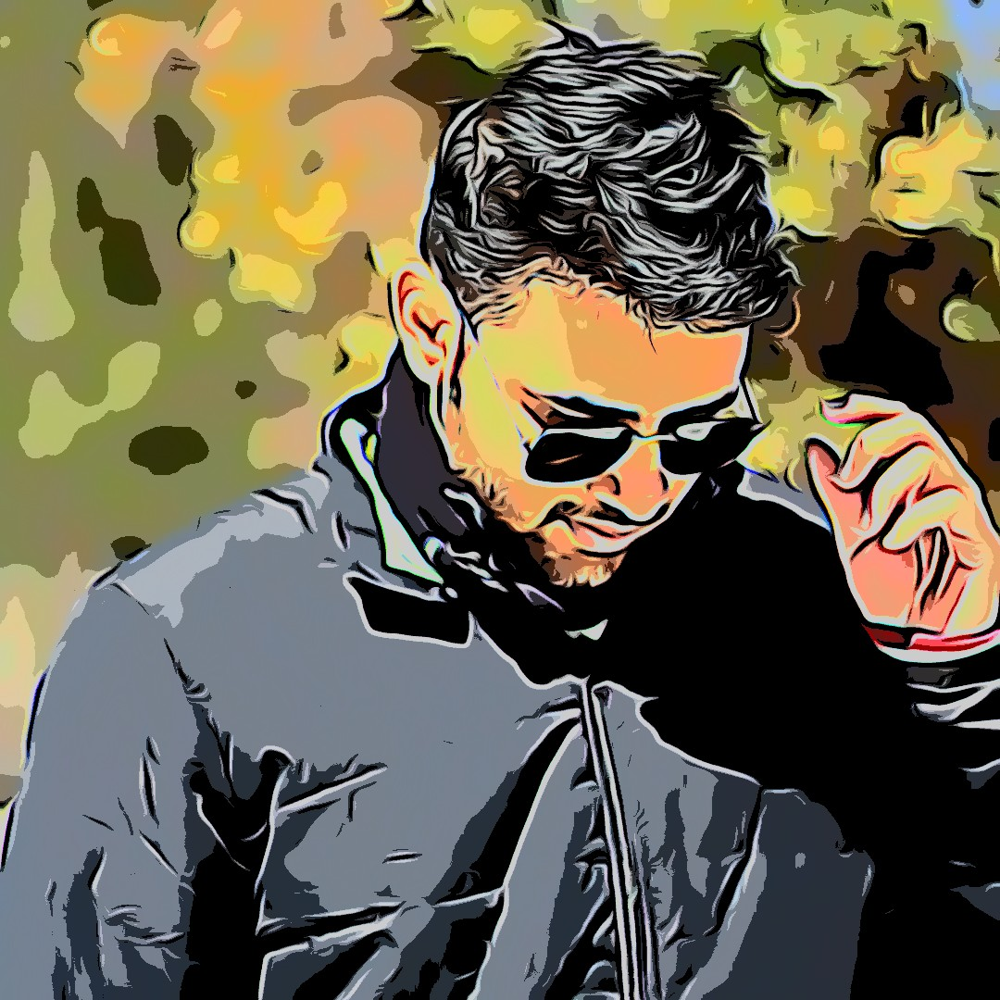

About Me

My interest lies in the field of optical character recognition and deep learning . I love to solve problems . I am highly
skilled in java ,C and python .Worked with Sql database. I have hands on experience in analyzing the huge datasets and
presenting insights through plotly library . I have been to smart india hackhathon and worked with msme to solve the
problem of predicting the demand of water pumps with django and ml lib .Extensively made use of folium libraries to
present the results thorugh various districts of country .I have also worked in automating the toll payment system on
highways using ocr and upi gateways . In this I made the use of pytesseract library and image processing techniques.